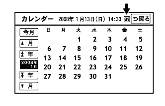
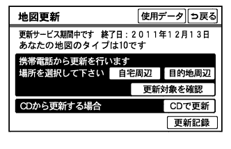

)
)HDD Navigation System Map cannot be Updated via Media (CD-R/DVD-R) |
)| Step 1 | Check GPS Time Acquisition |
Check Time Acquisition by GPS
Select "Calendar" on the Information/G screen to display the calendar. ”
 |
Check that "GPS" is displayed on the screen.
|
| ||||
| OK | |
| Step 2 | Check Update Service Period |
Check Update Service Period
Press "Setup/Edit" to display the "Setup/Edit" screen.
Select the "Navi" tab, then select "Map Update" to display the "Map Update" screen.
 |
Check the end date of the update service.
| Result | Status | Proceed to |
|---|---|---|
| Within update service period | - | A |
| End date of update service period is displayed as "**" | The vehicle has been driven 100 km or more since new vehicle purchase (new navigation purchase) | B |
| End date of update service period is displayed as "**" | At purchase of annual update version (after full map data update) | C |
|
| ||||
|
| ||||
| A | |
| Step 3 | Check Map Data for Update |
Check Update Map Data for Errors
Check whether a data error message was displayed on the display when the update media (CD-R/DVD-R) was inserted.
| Display Content | Display Timing |
|---|---|
| "There is an error in the data for ○○○, ○○○, ○○○. Updating of the remaining data will continue." | When starting conversion for map update using media (CD-R/DVD-R) When some (but not all) of the selected prefectures are invalid |
| "There is an error in the data. Please select another list." | When starting conversion for map update using media (CD-R/DVD-R) and while displaying map update related screens When all of the selected prefectures are invalid |
| "There is an error in the map update data. Please select another list from the map update screen." | When starting conversion for map update using media (CD-R/DVD-R) and while displaying screens other than map update related screens When all of the selected prefectures are invalid |
| Result | Proceed to |
|---|---|
| No Display | A |
| Displayed | B |
|
| ||||
| A | |
| Step 4 | Check Error |
Check Update Media (CD-R/DVD-R)
Check whether there was an error when the update media (CD-R/DVD-R) was created.
| Result | Proceed to |
|---|---|
| No error | A |
| Error present | B |
|
| ||||
| A | ||
| ||